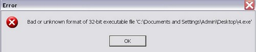
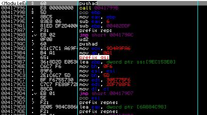
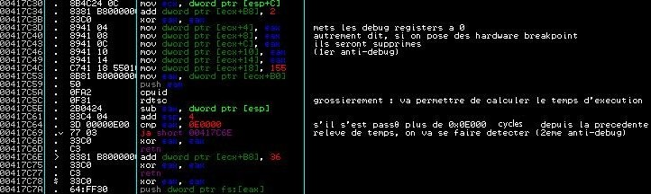
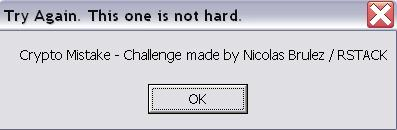

Forwarder de Nicolas Brulez - Solution d'elooo

Téléchargez la cible ici !!
| Niveau | Outils | Auteur |
|---|---|---|
| Intermédiaire/Avancé | Ollydbg | elooo |
Sommaire
Introduction
Ceci est ma solution (baclée) concernant le binaire de Nicolas Brulez (forwarder.exe), codé pour securitech 2005.
Le but était de trouver l'IP des pirates hardcodée dans le serveur de la backdoor (serveur récupéré sur le PC de la victime).
Donc c'est parti...

Etude de la structure du fichier
0X110 DWORD AddressOfEntryPoint : 0X00017995 -----> Execution starts at 0x00017995 (RVA) or at 0x00417995 (VA)4 sections dont une "vile" qui contient l'entrypoint :
Section vile RVA = 0X00012000 Offset = 0X00006000 Length = 0X0002FE00 (Section of Import Table !) SECTION 0X258 Name : vile 0X260 DWORD VirtualSize : 0X00030000 0X264 DWORD VirtualAddress : 0X00012000 0X268 DWORD SizeOfRawData : 0X0002FE00 0X26C DWORD PointerToRawData : 0X00006000 0X270 DWORD PointerToRelocations : 0X00000000 0X274 DWORD PointerToLinenumbers : 0X00000000 0X278 WORD NumberOfRelocations : 0X0000 0X27A WORD NumberOfLinenumbers : 0X0000 0X27C DWORD Characteristics : 0XE0000020 -----> Contains executable code -----> Executable as code -----> Readable -----> Writeable
Or la section code est ici (et c'est la section code qui devrait contenir cet entrypoint, en toute logique...) :
Section .text RVA = 0X00001000 Offset = 0X00001000 Length = 0X00000000 SECTION 0X1E0 Name : .text 0X1E8 DWORD VirtualSize : 0X00009ACA 0X1EC DWORD VirtualAddress : 0X00001000 0X1F0 DWORD SizeOfRawData : 0X00000000 0X1F4 DWORD PointerToRawData : 0X00001000 0X1F8 DWORD PointerToRelocations : 0X00000000 0X1FC DWORD PointerToLinenumbers : 0X00000000 0X200 WORD NumberOfRelocations : 0X0000 0X202 WORD NumberOfLinenumbers : 0X0000 0X204 DWORD Characteristics : 0XE0000080 -----> Contains uninitialized data -----> Executable as code -----> Readable -----> Writeable
=> Redirection de l'Original EntryPoint -> le binaire est probablement crypté/compressé/protégé, ce qui en soit ne m'étonne pas de Nico :)
Debugging
On charge le binaire dans Ollydbg :

Pourquoi ça plante avec un message typique "votre fichier ne doit pas avoir une structure correcte" ?
Parce qu'il y a des "originalités" ou plutôt une feinte :
0X158 DWORD LoaderFlags : 0XDEADBEEF 0X15C DWORD NumberOfRvaAndSizes : 0XFFF7FFC0 -----> Number of valid entries in the IMAGE_DATA_DIRECTORY : 4294442944
La valeur dans LoaderFlags, c'est juste une signature. Que la valeur soit renseignée ou pas (même si initialement elle n'est pas destinée à contenir une signature) ce n'est pas un problème.
Par contre pour NumberOfRvaAndSizes, c'est plus problèmatique.
Par défaut elle devrait contenir la valeur 16, soit 0x10.
On pourrait même mettre beaucoup moins vu que seule l'IMAGE_DIRECTORY_ENTRY_IMPORT est utilisée dans ce binaire, mais ne compliquons pas...
On va mettre 0x10 au lieu de 0XFFF7FFC0 comme valeur de NumberOfRvaAndSizes.
0X158 DWORD LoaderFlags : 0XDEADBEEF 0X15C DWORD NumberOfRvaAndSizes : 0X00000010 -----> Number of valid entries in the IMAGE_DATA_DIRECTORY : 16
Voilà.
On retente de charger le binaire dans Ollydbg et un message nous aanonçant que l'entrypoint est à l'extérieur de la section code apparaît.
Ce qui confirme donc ce que j'avais signalé avant, que le binaire devait être compressé :)
Nous sommes à l'entrypoint :

On voit tout de suite que le code n'est pas "propre", qu'il y a un jeu perpétuel avec les registres et de l'obfuscation de code.
Par contre je ne vais pas pouvoir tout détailler, sinon je vais écrire des pages entières :/
Je vais juste me contenter d'expliquer les anti-debugs que je vois, comment je les bypasse, et puis les diverses choses importantes qui pourront apparaître par la suite :P
Donc on trace un peu, et on voit très vite dans le code deux antidebugs :

(c'est très mal Nico, ils sont en clair :P), on va donc faire très attention dès à présent car on sait qu'on peut se faire détecter lors de l'analyse de ce binaire.
D'ailleurs, pof, qu'est-ce que je disais, on voit immédiatement la mise en place d'un SEH juste en-dessous :
/*417C78*/ xor eax, eax /*417C7A*/ push dword ptr fs:[eax] /*417C7D*/ mov dword ptr fs:[eax], esp /*417C80*/ cpuid /*417C82*/ rdtsc /*417C84*/ ud2 /*417C86*/ pop dword ptr fs:[0] /*417C8C*/ add esp, 4 /*417C8F*/ popad /*417C90*/ pushad
(On notera aussi le cpuid/rdtsc qui va faire un 1er relevé du temps passé depuis le début de l'execution)
Le SEH handler est en : 00417C30 (juste le bout de code qui était pasté ci-dessus dites-donc :P Comme c'est bizarre :P)
0012FF7C /0012FFE0 Pointer to next SEH record 0012FF80 |00417C30 SE handler 0012FF84 |7C910738 ntdll.7C910738
On va donc mettre un hardware breakpoint dessus afin de s'arrêter juste avant le test sur l'écoulement du temps, puis on fera shift+F9 pour relancer l'execution après l'exception.
J'ai oublié de dire : c'est l'"ud2" qui va engendrer une exception, plus précisément une exception "Illegal Instruction" et qui va donc faire passer par le SEH.
On se moque de l'effacement des debug register là puisqu'on a breaké avant et qu'on n'a pas cherché à automatiser la tâche.
Faudra voir ensuite si il serait préférable d'automatiser ou pas... en fonction du nombre de layers :)
Donc arrivé ici :
00417C64 . 3D 00000E00 cmp eax, 0E0000 ; si plus de 0x0E000 cycles depuis la precedente 00417C69 . 77 03 ja short 00417C6E ; releve de temps, detection (2eme anti-debug)
On va faire en sorte que ça soit inférieur à 0E0000.
J'ai pour habitude d'éviter de modifier le code... on ne sait jamais si il y a une vérification par checksum et qu'on ne l'a pas vu, on risquerait de se faire avoir et de devoir recommencer...
Je préfère largement toucher aux flags.
Donc je vais mettre le carry flag à 1, et il croira que c'est inférieur, du coup il ne sautera pas en 00417C6E :)
(Petit rajout : dans mon script d'automatisation via ollydbg, j'ai "noppé" sauvagement, et donc touché au code, et mes modifications de code n'ont pas été détectées, donc je peux affirmer qu'il n'y a pas de checksum sur le code du binaire).
On revient dans le code du binaire, et pof, on se retape exactement la même exception :
00417F88 . 0F0B ud2 00417F8A . 64:67:8F06 00>pop dword ptr fs:[0] 00417F90 . 83C4 04 add esp, 4 00417F93 . 61 popad
Donc bah rebelotte :p
On tombe cette fois, au retour dans le code du binaire sur des opcodes qu'ollydbg n'a pas du tout analysées :
00418E17 0F db 0F 00418E18 0B db 0B 00418E19 64 db 64 ; CHAR 'd' 00418E1A 67 db 67 ; CHAR 'g' 00418E1B 8F db 8F 00418E1C 06 db 06 00418E1D 00 db 00 00418E1E 00 db 00 00418E1F 83C4 04 add esp, 4
Comme j'aime bien y voir plus clair, je fais ctrl+A (va analyser le code tout simplement)
00418E17 . 0F0B ud2 00418E19 . 64:67:8F06 00>pop dword ptr fs:[0] 00418E1F . 83C4 04 add esp, 4 00418E22 . 61 popad 00418E23 . 8D85 6507EEDE lea eax, dword ptr [ebp+DEEE0765]
Arg, bon apparemment c'est *juste* un autre layer, avec exactement le même piège.
Toujours trop répétitif Nico ;)
Donc bah on a compris le principe donc on continue comme au-dessus...
3eme layer :
004414F2 |. 90 nop 004414F3 |. 61 popad 004414F4 |. 64:67:8F06 00>pop dword ptr fs:[0] 004414FA |. 83C4 04 add esp, 4 004414FD \. C3 retn 004414FE . 810424 D3601B>add dword ptr [esp], 1B60D3
Là ça change un peu, mais le principe est le même, on est toujours juste avant l'execution d'une exception (single step cette fois-ci) donc rebelotte.
Le code d'effacement des debug register change un peu aussi, mais reste le même finalement :
00441497 66:B8 AA01 mov ax, 1AA 0044149B 34 FF xor al, 0FF 0044149D AB stos dword ptr es:[edi]
0x1AA xor 0x0FF ça fait toujours 0x155 :)
Puis on mettra 0x155 dans [edi].
Bref c'est la même chose.
Pareil pour le test sur le temps :
004414BC 3D 37130E00 cmp eax, 0E1337 004414C1 77 10 ja short 004414D3
Sauf que là le test ne se fait plus sur E0000 mais sur E1337 cycles (on va lui montrer qu'on est une 1337, nameho :P)
Puis on retombe de nouveau sur une exception single step, puis encore une,et une troisième, etc, etc
A un moment donné, on retombe en 0041A628, on change de nouveau d'exception pour retrouver les "illegal instruction" ud2.
Donc on continue à les passer à la main.
Là apparemment y'a l'air d'avoir un nombre "raisonnable" (c'est subjectif hein :)) de layers, donc on peut se permettre de tracer à la main comme je le fais si on est patient.
Sinon il aurait fallu coder un script (ollyscript par exemple) pour les passer de manière automatique.
Puis on revient en 0043D9A8 à la sortie d'un SEH et rebelotte avec les exceptions single step.
Et là... CRASH... merde je me gauffre :(
Du coup j'ai codé un ollyscript qui me gère tout seul les exceptions :
Mon ollyscript crado (je promets de le ré-écrire proprement et de manière optimisée le jour où j'y penserai et que j'aurai un peu de temps :p)
Attention, l'ollyscript n'est pas du tout optimisé !!
Vous pouvez d'ailleurs noter les loops qui se répètent (j'ai sauvagement copié-collé mon premier loop et adapté en changeant une valeur de temps à autres et non je n'ai pas honte :o) et puis il n'est quasiment pas commenté : autant faire les choses mal jusqu'au bout hein ;))... mais j'ai la flemme de l'optimiser...
J'aurais fait l'effort en d'autres circonstances, mais j'ai pas très-très envie de repasser du temps là-dessus. Il marche, c'est le principal, et il
a été fait à l'arrache... il gère quelque chose comme 180 SEH ou pas loin :) )
Donc je code au fur et à mesure, j'adapte, ça marche, je continue, je fais des loop, et à un moment, je vois que je suis trop loin car j'ai un messagebox qui me dit que j'ai tout faux...

En gros il se passe des choses juste avant la fin de mon script d'automatisation, donc je supprime la gestion d'une des exceptions et je trace à la main.
Et juste après l'exception, je tombe ici :
00422250 . 60 pushad 00422251 . FF95 079A4000 call dword ptr [ebp+409A07] ; kernel32.GetCommandLineA 00422257 . 8BF8 mov edi, eax 00422259 . B9 FFFFFFFF mov ecx, -1 0042225E . 32C0 xor al, al 00422260 . 57 push edi 00422261 . F2:AE repne scas byte ptr es:[edi] 00422263 . F7D1 not ecx 00422265 . 5F pop edi 00422266 > /813F 2D2D6B20 cmp dword ptr [edi], 206B2D2D ; Cherche "--k " 0042226C . 74 06 je short 00422274 ; si pas trouvé -> exit 0042226E . 47 inc edi ; inverse le saut et continue 0042226F . 49 dec ecx 00422270 . E3 35 jecxz short 004222A7 00422272 .^ EB F2 jmp short 00422266 00422274 > 83C7 04 add edi, 4 00422277 . 57 push edi 00422278 . 33C9 xor ecx, ecx 0042227A . 49 dec ecx 0042227B . 32C0 xor al, al 0042227D . F2:AE repne scas byte ptr es:[edi] ; recupere l'argument 0042227F . F7D1 not ecx 00422281 . 49 dec ecx 00422282 . E3 23 jecxz short 004222A7 00422284 . 5B pop ebx 00422285 . 51 push ecx 00422286 . 53 push ebx 00422287 . E8 7BE2FFFF call 00420507 ; on prend le call
On trace et :
0041EC48 /$ C785 44A04000>mov dword ptr [ebp+40A044], 67452301 0041EC52 |. C785 48A04000>mov dword ptr [ebp+40A048], EFCDAB89 0041EC5C |. C785 4CA04000>mov dword ptr [ebp+40A04C], 98BADCFE 0041EC66 |. C785 50A04000>mov dword ptr [ebp+40A050], 10325476 0041EC70 \. C3 retn
Arg, ça c'est la phase typique d'initialisation d'un algo relatif à un hash. Reste à savoir lequel...
Si on regarde un peu plus bas dans le code on voit :
0041ED8E |. 8B85 58A04000 mov eax, dword ptr [ebp+40A058] 0041ED94 |. 8B8D 5CA04000 mov ecx, dword ptr [ebp+40A05C] 0041ED9A |. 8B95 60A04000 mov edx, dword ptr [ebp+40A060] 0041EDA0 |. 33C1 xor eax, ecx 0041EDA2 |. 33C2 xor eax, edx 0041EDA4 |. 0385 54A04000 add eax, dword ptr [ebp+40A054] 0041EDAA |. 0307 add eax, dword ptr [edi] 0041EDAC |. C1C0 0B rol eax, 0B
0041EDAF |. 8985 54A04000 mov dword ptr [ebp+40A054], eax 0041EDB5 |. 8B85 54A04000 mov eax, dword ptr [ebp+40A054] 0041EDBB |. 8B8D 58A04000 mov ecx, dword ptr [ebp+40A058] 0041EDC1 |. 8B95 5CA04000 mov edx, dword ptr [ebp+40A05C] 0041EDC7 |. 33C1 xor eax, ecx 0041EDC9 |. 33C2 xor eax, edx 0041EDCB |. 0385 60A04000 add eax, dword ptr [ebp+40A060] 0041EDD1 |. 0347 04 add eax, dword ptr [edi+4] 0041EDD4 |. C1C0 0E rol eax, 0E
0041EDD7 |. 8985 60A04000 mov dword ptr [ebp+40A060], eax 0041EDDD |. 8B85 60A04000 mov eax, dword ptr [ebp+40A060] 0041EDE3 |. 8B8D 54A04000 mov ecx, dword ptr [ebp+40A054] 0041EDE9 |. 8B95 58A04000 mov edx, dword ptr [ebp+40A058] 0041EDEF |. 33C1 xor eax, ecx 0041EDF1 |. 33C2 xor eax, edx 0041EDF3 |. 0385 5CA04000 add eax, dword ptr [ebp+40A05C] 0041EDF9 |. 0347 08 add eax, dword ptr [edi+8] 0041EDFC |. C1C0 0F rol eax, 0F
0041EDFF |. 8985 5CA04000 mov dword ptr [ebp+40A05C], eax 0041EE05 |. 8B85 5CA04000 mov eax, dword ptr [ebp+40A05C] 0041EE0B |. 8B8D 60A04000 mov ecx, dword ptr [ebp+40A060] 0041EE11 |. 8B95 54A04000 mov edx, dword ptr [ebp+40A054] 0041EE17 |. 33C1 xor eax, ecx 0041EE19 |. 33C2 xor eax, edx 0041EE1B |. 0385 58A04000 add eax, dword ptr [ebp+40A058] 0041EE21 |. 0347 0C add eax, dword ptr [edi+C] 0041EE24 |. C1C0 0C rol eax, 0C
C'est typique d'un ripemd :)
MD5 utilise un algo et des constantes qui diffèrent aussi !
Je dirais qu'on est capable de l'identifier à l'oeil nu quand on a un peu l'habitude, sinon il existe des tools qui scanne un binaire à la recherche de signature d'algo cryptographique (je vous laisse googliser).
Dans le cas de ce binaire, pour pouvoir faire une recherche de signature d'algo, il aurait fallu dumper son code en mémoire afin de faire la recherche sur le binaire décrypté (sinon on n'aurait pas vu grand chose ;)).
Mais même dumper le binaire, j'ai la flemme :P
0042228C . 8B18 mov ebx, dword ptr [eax] ;1er dword du hash 0042228E . 8B70 0C mov esi, dword ptr [eax+C] ;4eme dword du hash 00422291 . 33DE xor ebx, esi ;ebx = ebx ^ esi 00422293 . 8B70 08 mov esi, dword ptr [eax+8] ;esi = 3eme dword du hash 00422296 . 0FCE bswap esi ;inverse 3eme dword (little endian) 00422298 . 81FE 7D7A002F cmp esi, 2F007A7D ;esi egal a 2F007A7D sinon messagebox 0042229E . 0F84 7C000000 je 00422320
Le propre d'un hash, c'est de n'être qu'une "signature", une valeur unique (ou presque... puisque des collisions ont été démontrées pour le MD5 par exemple) pour une entrée donnée.
Autrement dit, on ne pourra pas trouver la valeur "en clair" en reversant l'algo... si on veut retrouver cette valeur à partir d'un hash, il faudrait bruteforcer...
Hum, on va tenter de ruser pour pouvoir continuer plutôt :)
Faisons lui croire d'abord que la valeur attendue était bien la bonne en inversant le saut.
On arrive alors ici :
00422320 B8 00D04000 mov eax, 0040D000 00422325 B9 FC2F0000 mov ecx, 2FFC 0042232A 812C08 3713ADDE sub dword ptr [eax+ecx], DEAD1337 00422331 010C08 add dword ptr [eax+ecx], ecx 00422334 311C08 xor dword ptr [eax+ecx], ebx 00422337 83E9 04 sub ecx, 4 0042233A ^ 75 EE jnz short 0042232A 0042233C 83C4 08 add esp, 8 0042233F 61 popad
Ca ressemble fortement à une jolie boucle de décryptage !
En effet, si on se rend en 0040D000 (qui est la section data), on voit :
0040D000 00 00 00 00 11 1F 42 86 3D 1B 42 86 A9 1E 42 86 0040D010 68 1B 42 86 B5 1B 42 86 C6 1B 42 86 FE 1B 42 86 0040D020 76 1C 42 86 83 1C 42 86 92 1C 42 86 E5 4B 42 86 0040D030 1F 4C 42 86 31 4C 42 86 43 4C 42 86 94 4C 42 86 0040D040 A1 4C 42 86 F2 4C 42 86 2A 49 42 86 62 49 42 86 0040D050 6D 49 42 86 F4 3C 42 86 BA 39 42 86 DF 37 42 86 0040D060 3C 33 42 86 F1 30 82 86 ED 30 82 86 C8 71 42 86 0040D070 3C 6F 42 86 3C 9B 42 86 07 B1 42 86 D9 30 82 86 0040D080 D5 30 82 86 C1 6F 42 86 CD 30 82 86 C9 30 82 86 0040D090 20 B1 42 86 C1 30 82 86 BD 30 82 86 B9 30 82 86 0040D0A0 C6 3B 94 68 BF 3A A8 6F BC 42 8F 7E A9 30 82 86 0040D0B0 B6 3B 94 68 AF 3A A8 75 AE 42 93 71 99 30 82 86 0040D0C0 A6 3B 94 68 9F 3A A8 7E 96 42 91 75 89 30 82 86 0040D0D0 96 3B 94 68 8F 3A A8 75 8F 3D 90 86 8A 3B 94 68 0040D0E0 83 3A A8 74 7E 42 8E 76 6D 30 82 86 7A 3B 94 68 0040D0F0 73 3A A8 75 6A 42 8F 73 5D 30 82 86 6A 39 8E 68 0040D100 66 3D 9A 68 62 40 93 68 5E 40 82 86 5A 3B 94 68 0040D110 53 3A A8 6F 53 38 82 86 4E 3B 94 68 47 3A A8 75 0040D120 41 42 93 74 31 30 82 86 3E 3B 94 68 37 3A A8 72 0040D130 30 42 91 70 21 30 82 86 2E 3B 94 68 27 3A A8 73 0040D140 27 3A 8F 86 22 3B 94 68 1B 3A A8 71 11 42 91 75 0040D150 05 30 82 86 12 3B 94 68 0B 3A A8 75 05 42 8E 72 0040D160 F5 2F 82 86 02 3B 94 68 FB 39 A8 7D F4 41 91 75 0040D170 E5 2F 82 86 F2 3A 94 68 EB 39 A8 75 E9 41 91 7E 0040D180 D5 2F 82 86 E2 3A 94 68 DB 39 A8 72 D2 41 91 71 [...]
2FFC correspond au nombre de bytes à décrypter.
0040FFF0 65 01 82 86 61 01 82 86 5D 01 82 86 59 01 82 86 00410000 00 00 00 00 00 00 00 00 00 00 00 00 00 00 00 00 00410010 00 00 00 00 00 00 00 00 00 00 00 00 00 00 00 00 00410020 00 00 00 00 00 00 00 00 00 00 00 00 00 00 00 00 00410030 00 00 00 00 00 00 00 00 00 00 00 00 00 00 00 00
En effet, puisqu'ensuite on n'a plus que des bytes à 0
On voit qu'à chaque dword, il soustrait tout d'abord 0xDEAD1337, ensuite il lui additionne
le nombre de bytes à décrypter, puis xor ce dword avec ebx (valeur d'ebx que nous n'avons pas),
passe au dword suivant et ainsi de suite.
Bon, il va falloir trouver ebx et on pourra décrypter l'intégralité vu qu'on a l'algo de décryption sous les yeux :)
Si on regarde tout en bas de la partie cryptée, on voit :
0040FFD0 85 01 82 86 81 01 82 86 7D 01 82 86 79 01 82 86 0040FFE0 75 01 82 86 71 01 82 86 6D 01 82 86 69 01 82 86 0040FFF0 65 01 82 86 61 01 82 86 5D 01 82 86 59 01 82 86
Les dwords changent peu, excepté les 1ers bytes, à chaque fois décrémenté de 4.
Il est fort à parier qu'il s'agit ici de null bytes, autrement dit de bytes qui seront
à 0 une fois décryptés.
On va donc pouvoir en déduire la clef facilement :)
En début de routine, il tentera de décrypter le dword en 0040FFFC, et donc ecx sera égal à 2FFC.
On a donc :
([40FFFC] - DEAD1337 + 2FFC) xor ebx = 00000000 <=> (86820159 - DEAD1337 + 2FFC) xor ebx = 00000000 <=> (A7D4EE22 + 2FFC) xor ebx = 00000000 <=> A7D51E1E xor ebx = 00000000 <=> ebx = A7D51E1E
On a plus qu'à donner cette valeur à ebx, et à tracer tranquillement la routine, et on devrait avoir notre section data entièrement décryptée :)
C'est effectivement le cas, d'ailleurs si on remonte une fois la section décryptée, on peut y voir :
0040D0A0 31 37 32 2E 32 36 2E 37 33 2E 37 38 00 00 00 00 172.26.73.78.... 0040D0B0 31 37 32 2E 32 36 2E 31 31 2E 33 35 00 00 00 00 172.26.11.35.... 0040D0C0 31 37 32 2E 32 36 2E 38 39 2E 31 31 00 00 00 00 172.26.89.11.... 0040D0D0 31 37 32 2E 32 36 2E 31 2E 35 36 00 31 37 32 2E 172.26.1.56.172. 0040D0E0 32 36 2E 32 35 2E 34 30 00 00 00 00 31 37 32 2E 26.25.40....172. 0040D0F0 32 36 2E 31 39 2E 37 33 00 00 00 00 31 39 34 2E 26.19.73....194. 0040D100 31 35 38 2E 31 30 33 2E 31 30 00 00 31 37 32 2E 158.103.10..172. 0040D110 32 36 2E 37 2E 38 00 00 31 37 32 2E 32 36 2E 31 26.7.8..172.26.1 0040D120 34 2E 33 32 00 00 00 00 31 37 32 2E 32 36 2E 34 4.32....172.26.4 0040D130 37 2E 31 36 00 00 00 00 31 37 32 2E 32 36 2E 33 7.16....172.26.3 0040D140 2E 36 37 00 31 37 32 2E 32 36 2E 35 38 2E 31 31 .67.172.26.58.11 0040D150 00 00 00 00 31 37 32 2E 32 36 2E 31 34 2E 34 34 ....172.26.14.44 0040D160 00 00 00 00 31 37 32 2E 32 36 2E 39 37 2E 31 31 ....172.26.97.11 0040D170 00 00 00 00 31 37 32 2E 32 36 2E 31 30 2E 31 38 ....172.26.10.18 0040D180 00 00 00 00 31 37 32 2E 32 36 2E 34 39 2E 31 35 ....172.26.49.15 0040D190 00 00 00 00 31 37 32 2E 32 36 2E 31 39 2E 36 30 ....172.26.19.60 0040D1A0 00 00 00 00 31 37 32 2E 32 36 2E 33 34 2E 39 38 ....172.26.34.98
Tout un tas d'IP :)
On continue tranquillement à tracer, parce qu'on ne sait toujours pas quelle IP ça peut bien être :/
On tombe sur la routine qui va décompresser la section code et la placer en 00401000 :
00422345 60 pushad 00422346 8B7424 24 mov esi, dword ptr [esp+24] 0042234A 8B7C24 28 mov edi, dword ptr [esp+28] 0042234E FC cld 0042234F B2 80 mov dl, 80 00422351 33DB xor ebx, ebx 00422353 A4 movs byte ptr es:[edi], byte ptr [esi] 00422354 B3 02 mov bl, 2 00422356 E8 6D000000 call 004223C8 0042235B ^ 73 F6 jnb short 00422353 0042235D 33C9 xor ecx, ecx 0042235F E8 64000000 call 004223C8 00422364 73 1C jnb short 00422382 00422366 33C0 xor eax, eax 00422368 E8 5B000000 call 004223C8 0042236D 73 23 jnb short 00422392 0042236F B3 02 mov bl, 2 00422371 41 inc ecx 00422372 B0 10 mov al, 10 00422374 E8 4F000000 call 004223C8 00422379 12C0 adc al, al 0042237B ^ 73 F7 jnb short 00422374 0042237D 75 3F jnz short 004223BE 0042237F AA stos byte ptr es:[edi] 00422380 ^ EB D4 jmp short 00422356 00422382 E8 4D000000 call 004223D4 00422387 2BCB sub ecx, ebx 00422389 75 10 jnz short 0042239B 0042238B E8 42000000 call 004223D2 00422390 EB 28 jmp short 004223BA 00422392 AC lods byte ptr [esi] 00422393 D1E8 shr eax, 1 00422395 74 4D je short 004223E4 00422397 13C9 adc ecx, ecx 00422399 EB 1C jmp short 004223B7 0042239B 91 xchg eax, ecx 0042239C 48 dec eax 0042239D C1E0 08 shl eax, 8 004223A0 AC lods byte ptr [esi] 004223A1 E8 2C000000 call 004223D2 004223A6 3D 007D0000 cmp eax, 7D00 004223AB 73 0A jnb short 004223B7 004223AD 80FC 05 cmp ah, 5 004223B0 73 06 jnb short 004223B8 004223B2 83F8 7F cmp eax, 7F 004223B5 77 02 ja short 004223B9 004223B7 41 inc ecx 004223B8 41 inc ecx 004223B9 95 xchg eax, ebp 004223BA 8BC5 mov eax, ebp 004223BC B3 01 mov bl, 1 004223BE 56 push esi 004223BF 8BF7 mov esi, edi 004223C1 2BF0 sub esi, eax 004223C3 F3:A4 rep movs byte ptr es:[edi], byte ptr [es> 004223C5 5E pop esi 004223C6 ^ EB 8E jmp short 00422356 004223C8 02D2 add dl, dl 004223CA 75 05 jnz short 004223D1 004223CC 8A16 mov dl, byte ptr [esi] 004223CE 46 inc esi 004223CF 12D2 adc dl, dl 004223D1 C3 retn
On breake vite en :
004223E4 2B7C24 28 sub edi, dword ptr [esp+28] ; 4.00401000
Histoire de ne pas perdre de temps, et on continue à tracer encore.
004362D2 8036 89 xor byte ptr [esi], 89 004362D5 46 inc esi 004362D6 49 dec ecx 004362D7 85C9 test ecx, ecx 004362D9 ^ 75 F7 jnz short 004362D2 004362DB 8DB5 7FD84000 lea esi, dword ptr [ebp+40D87F] 004362E1 803E CC cmp byte ptr [esi], 0CC 004362E4 75 04 jnz short 004362EA 004362E6 0F31 rdtsc 004362E8 50 push eax 004362E9 C3 retn
Encore une boucle de decryptage (un layer), cette fois-ci pour le code en 422440 (un simple xor 89 sur chaque byte).
On notera la détection de 0xCCh en dessous (anti-breakpoint).
Et puis c'est reparti pour les SEH :
004362F0 8B7C24 0C mov edi, dword ptr [esp+C] 004362F4 8387 B8000000 0>add dword ptr [edi+B8], 1 004362FB 33C0 xor eax, eax 004362FD 8D7F 04 lea edi, dword ptr [edi+4] 00436300 AB stos dword ptr es:[edi] 00436301 AB stos dword ptr es:[edi] 00436302 AB stos dword ptr es:[edi] 00436303 AB stos dword ptr es:[edi] 00436304 AB stos dword ptr es:[edi] 00436305 66:B8 AA01 mov ax, 1AA 00436309 34 FF xor al, 0FF 0043630B AB stos dword ptr es:[edi] 0043630C 8B87 A8000000 mov eax, dword ptr [edi+A8] 00436312 8140 28 8E9CF60>add dword ptr [eax+28], 0F69C8E 00436319 8B87 94000000 mov eax, dword ptr [edi+94] 0043631F 50 push eax 00436320 0FA2 cpuid 00436322 0F31 rdtsc 00436324 2B0424 sub eax, dword ptr [esp] 00436327 83C4 04 add esp, 4 0043632A 3D 37130E00 cmp eax, 0E1337 0043632F 77 10 ja short 00436341 00436331 8B87 A8000000 mov eax, dword ptr [edi+A8] 00436337 8168 28 775E730>sub dword ptr [eax+28], 735E77 0043633E 2BC0 sub eax, eax 00436340 C3 retn 00436341 8387 9C000000 3>add dword ptr [edi+9C], 38 00436348 2BC0 sub eax, eax 0043634A C3 retn 0043634B FF0424 inc dword ptr [esp] ; 4.004362EF 0043634E 64:67:FF36 0000 push dword ptr fs:[0] 00436354 64:67:8926 0000 mov dword ptr fs:[0], esp 0043635A 60 pushad 0043635B 0FA2 cpuid 0043635D 0F31 rdtsc 0043635F F1 int1 00436360 90 nop 00436361 61 popad 00436362 64:67:8F06 0000 pop dword ptr fs:[0] 00436368 83C4 04 add esp, 4 0043636B C3 retn
Nico, grrrrr :P
Bon j'ai eu le courage de passer un SEH à la main, puis je me suis dit que j'étais stupide puisque que la section code est décryptée...
Allons voir le code de cette fameuse section :)
Bon, on y voit déjà qu'il charge toutes nos IP décryptées :
00401000 /. 55 push ebp 00401001 |. 8BEC mov ebp, esp 00401003 |. 81EC 28050000 sub esp, 528 00401009 |. 57 push edi 0040100A |. C785 F0FAFFFF>mov dword ptr [ebp-510], 0 00401014 |. 6A 06 push 6 00401016 |. 6A 01 push 1 00401018 |. 6A 02 push 2 0040101A |. E8 21300000 call 00404040 0040101F |. 8985 F0FAFFFF mov dword ptr [ebp-510], eax 00401025 |. 83BD F0FAFFFF>cmp dword ptr [ebp-510], -1 0040102C |. 75 08 jnz short 00401036 0040102E |. 83C8 FF or eax, FFFFFFFF 00401031 |. E9 EA030000 jmp 00401420 00401036 |> 68 94D14000 push 0040D194 ; ASCII "172.26.19.60" 0040103B |. E8 FA2F0000 call 0040403A 00401040 |. 8985 DCFAFFFF mov dword ptr [ebp-524], eax 00401046 |. 68 84D14000 push 0040D184 ; ASCII "172.26.49.15" 0040104B |. E8 EA2F0000 call 0040403A 00401050 |. 8985 DCFAFFFF mov dword ptr [ebp-524], eax 00401056 |. 68 74D14000 push 0040D174 ; ASCII "172.26.10.18" 0040105B |. E8 DA2F0000 call 0040403A 00401060 |. 8985 DCFAFFFF mov dword ptr [ebp-524], eax 00401066 |. 68 64D14000 push 0040D164 ; ASCII "172.26.97.11" 0040106B |. E8 CA2F0000 call 0040403A 00401070 |. 8985 DCFAFFFF mov dword ptr [ebp-524], eax 00401076 |. 68 54D14000 push 0040D154 ; ASCII "172.26.14.44" 0040107B |. E8 BA2F0000 call 0040403A 00401080 |. 8985 DCFAFFFF mov dword ptr [ebp-524], eax 00401086 |. 68 44D14000 push 0040D144 ; ASCII "172.26.58.11" 0040108B |. E8 AA2F0000 call 0040403A 00401090 |. 8985 DCFAFFFF mov dword ptr [ebp-524], eax 00401096 |. 68 38D14000 push 0040D138 ; ASCII "172.26.3.67" 0040109B |. E8 9A2F0000 call 0040403A 004010A0 |. 8985 DCFAFFFF mov dword ptr [ebp-524], eax 004010A6 |. 68 28D14000 push 0040D128 ; ASCII "172.26.47.16" 004010AB |. E8 8A2F0000 call 0040403A 004010B0 |. 8985 DCFAFFFF mov dword ptr [ebp-524], eax 004010B6 |. 68 18D14000 push 0040D118 ; ASCII "172.26.14.32" 004010BB |. E8 7A2F0000 call 0040403A 004010C0 |. 8985 DCFAFFFF mov dword ptr [ebp-524], eax 004010C6 |. 68 0CD14000 push 0040D10C ; ASCII "172.26.7.8" 004010CB |. E8 6A2F0000 call 0040403A 004010D0 |. 8985 DCFAFFFF mov dword ptr [ebp-524], eax 004010D6 |. 66:C785 D8FAF>mov word ptr [ebp-528], 2 004010DF |. 68 FCD04000 push 0040D0FC ; ASCII "194.158.103.10" 004010E4 |. E8 512F0000 call 0040403A 004010E9 |. 8985 DCFAFFFF mov dword ptr [ebp-524], eax 004010EF |. 68 ECD04000 push 0040D0EC ; ASCII "172.26.19.73" 004010F4 |. E8 412F0000 call 0040403A 004010F9 |. 8985 DCFAFFFF mov dword ptr [ebp-524], eax 004010FF |. 68 DCD04000 push 0040D0DC ; ASCII "172.26.25.40" 00401104 |. E8 312F0000 call 0040403A 00401109 |. 8985 DCFAFFFF mov dword ptr [ebp-524], eax 0040110F |. 68 D0D04000 push 0040D0D0 ; ASCII "172.26.1.56" 00401114 |. E8 212F0000 call 0040403A 00401119 |. 8985 DCFAFFFF mov dword ptr [ebp-524], eax 0040111F |. 68 C0D04000 push 0040D0C0 ; ASCII "172.26.89.11" 00401124 |. E8 112F0000 call 0040403A 00401129 |. 8985 DCFAFFFF mov dword ptr [ebp-524], eax 0040112F |. 68 B0D04000 push 0040D0B0 ; ASCII "172.26.11.35" 00401134 |. E8 012F0000 call 0040403A 00401139 |. 8985 DCFAFFFF mov dword ptr [ebp-524], eax 0040113F |. 68 A0D04000 push 0040D0A0 ; ASCII "172.26.73.78" 00401144 |. E8 F12E0000 call 0040403A 00401149 |. 8985 DCFAFFFF mov dword ptr [ebp-524], eax 0040114F |. 68 FCD04000 push 0040D0FC ; ASCII "194.158.103.10" 00401154 |. E8 E12E0000 call 0040403A
On descend encore et cette fois-ci on voit :
00401500 /$ 55 push ebp 00401501 |. 8BEC mov ebp, esp 00401503 |. 81EC 98010000 sub esp, 198 00401509 |. C745 FC 00000>mov dword ptr [ebp-4], 0 00401510 |. 66:C785 68FEF>mov word ptr [ebp-198], 2 00401519 |. 8D85 6CFEFFFF lea eax, dword ptr [ebp-194] 0040151F |. 50 push eax 00401520 |. 66:8B8D 68FEF>mov cx, word ptr [ebp-198] 00401527 |. 51 push ecx 00401528 |. E8 312B0000 call 0040405E 0040152D |. 68 A4D14000 push 0040D1A4 ; ASCII "172.26.34.98" 00401532 |. E8 032B0000 call 0040403A 00401537 |. 8945 FC mov dword ptr [ebp-4], eax 0040153A |. 8B55 FC mov edx, dword ptr [ebp-4] 0040153D |. 52 push edx ; /Arg1 0040153E |. E8 EDFEFFFF call 00401430 ; \4.00401430 00401543 |. 83C4 04 add esp, 4 00401546 |. E8 0D2B0000 call 00404058 0040154B |. 33C0 xor eax, eax 0040154D |. 8BE5 mov esp, ebp 0040154F |. 5D pop ebp 00401550 \. C3 retn
172.26.34.98 semble être l'IP attendue (si j'avais joué le jeu et tracé jusqu'au bout on aurait le nom des fonctions d'api à la place des call addr, mais j'ai vraiment la flemme :P)
Là j'avoue j'ai honte de poster un tel torchon... :|
Merci pour ton binaire Nico :)